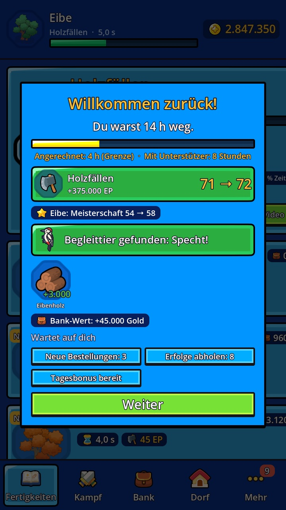
Spielt weiter, während du weg bist
Wähl eine Tätigkeit und mach das Spiel zu. Wenn du zurückkommst, siehst du genau, was dein Held geschafft hat: Holz, Erfahrung, neue Stufen und manchmal ein seltenes Begleittier.
Idle-Rollenspiel
Ein entspanntes Rollenspiel, das sich von selbst weiterspielt. Dein Held fällt Bäume, schürft Erz, schmiedet Schwerter und kämpft gegen Monster – auch wenn das Handy in der Tasche ist.
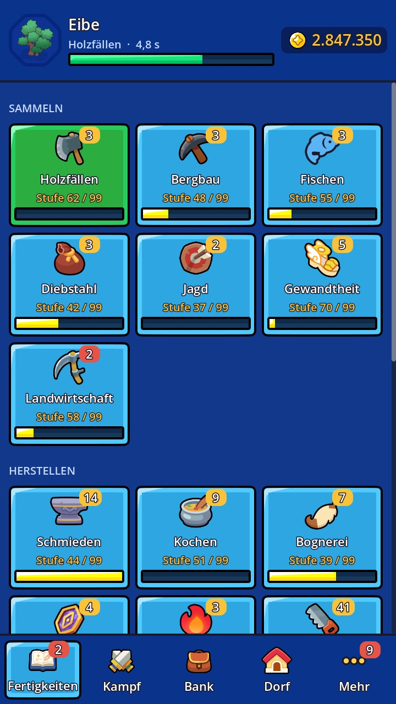
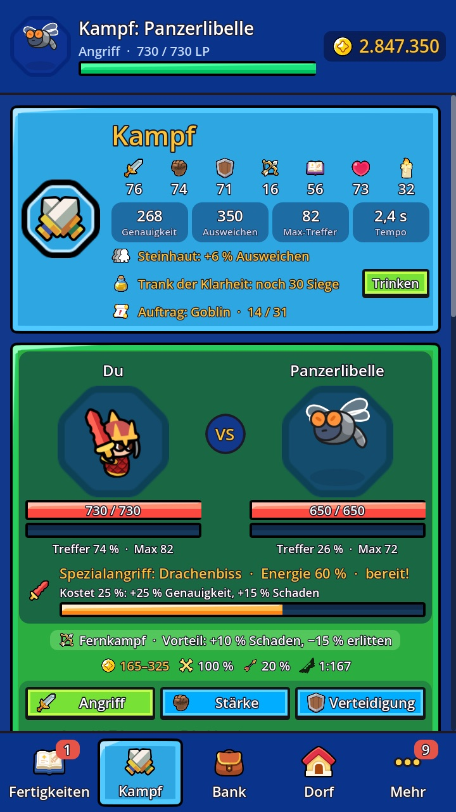
Holzfällen, Fischen, Schmieden oder ein Kampf – ein Tipp, und dein Held legt los.
Dein Held macht weiter, während das Spiel zu ist: bis zu 4 Stunden, mit Unterstützer 8.
Beute einsammeln, Stufen aufsteigen, bessere Ausrüstung schmieden und neue Gebiete freischalten.

Wähl eine Tätigkeit und mach das Spiel zu. Wenn du zurückkommst, siehst du genau, was dein Held geschafft hat: Holz, Erfahrung, neue Stufen und manchmal ein seltenes Begleittier.
Holzfällen, Bergbau, Fischen, Jagd, Diebstahl und Gewandtheit bringen Rohstoffe. Schmieden, Kochen, Bognerei, Runenfertigung, Handwerk und Kräuterkunde machen daraus Ausrüstung, Essen, Pfeile, Runen und Tränke. Jedes Ziel hat seine eigene Meisterschaft, die es mit der Zeit schneller macht.
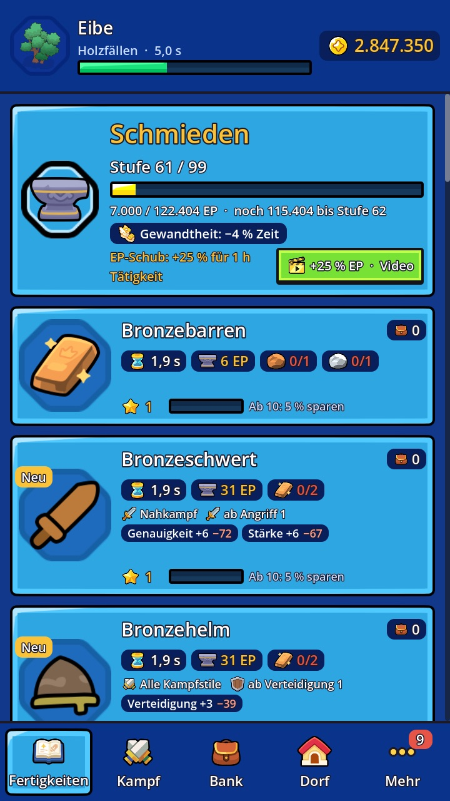
Aus Erz werden Barren, aus Barren Schwerter, Helme und Rüstungen. Jedes Metall ist stärker als das letzte, und mit wachsender Meisterschaft sparst du Material.
Drei Kampfstile, die sich gegenseitig schlagen. Kämpf gegen 41 Gegner in zwölf Gebieten, lade Spezialangriffe auf und nimm Kopfgeld-Aufträge an. Leg Essen und Tränke ein, dann kämpft dein Held auch offline weiter.
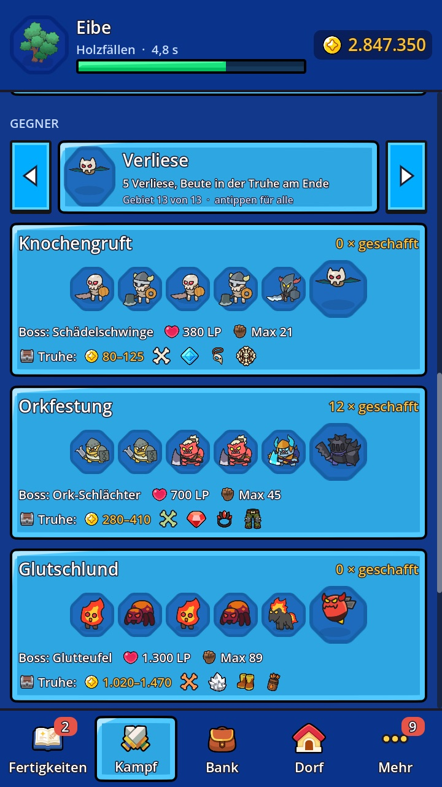
Fünf Verliese mit einem Boss und einer Truhe am Ende, dazu mächtige Bosse, die eigene, seltene Boss-Begleiter hinterlassen.
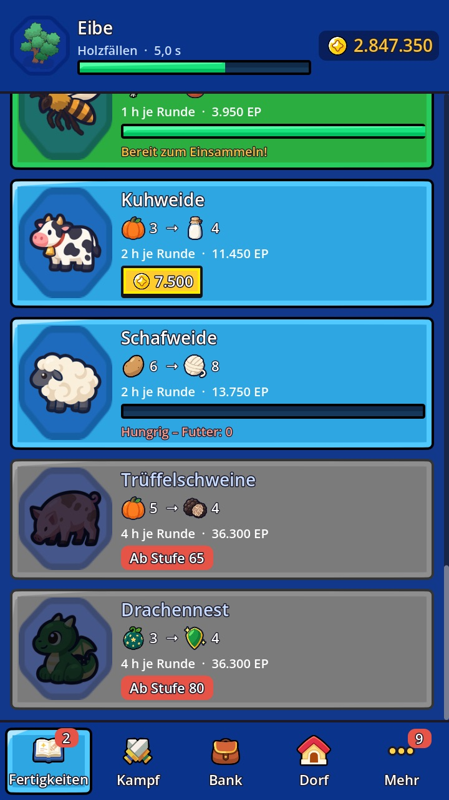
Pflanz Kräuter und Gemüse, die nebenbei wachsen, halte Bienen und Seidenraupen und ernte, wann immer du vorbeischaust.
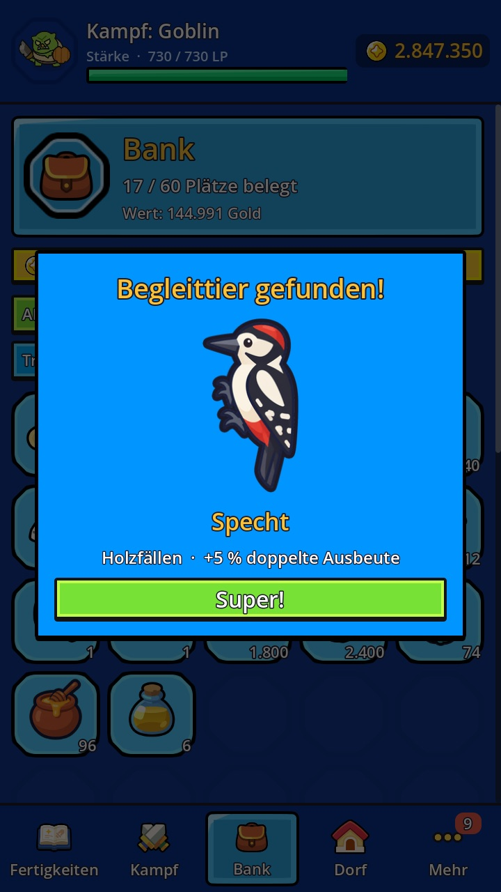
26 Begleittiere, jedes mit eigenem Bonus. Sie tauchen selten auf, beim Holzfällen, Fischen oder im Kampf – auch während du offline bist.
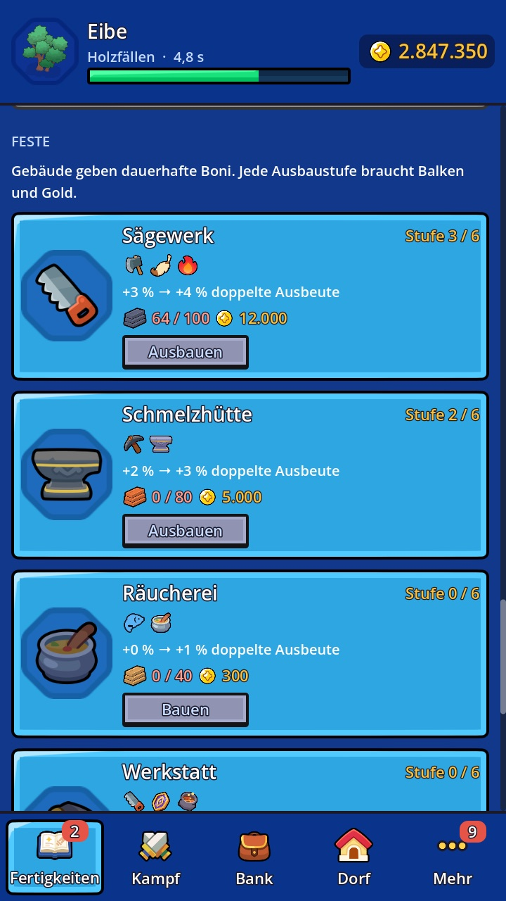
Bau Sägewerk, Schmelzhütte, Lagerhaus und mehr aus. Jedes Gebäude der Feste gibt dir dauerhafte Boni.
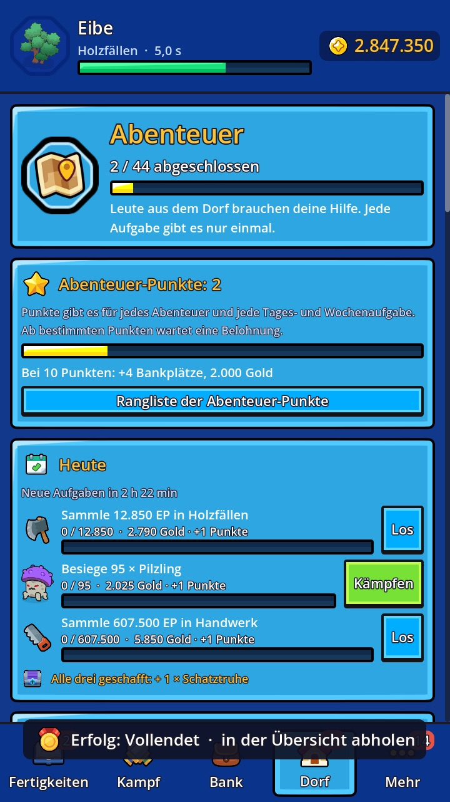
44 Abenteuer von den Leuten aus dem Dorf, Bestellungen, Erfolge und ein Sammelbuch mit 283 Gegenständen.
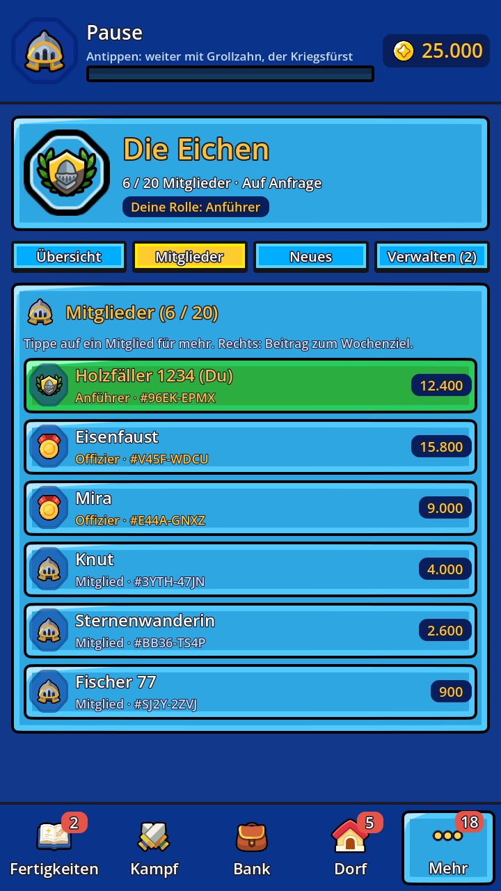
Gründe eine Gilde oder tritt einer bei. Gemeinsam schafft ihr das Wochenziel, besiegt den Gildenboss und stürmt den Raid. Anführer und Offiziere laden ein und verwalten die Mitglieder.
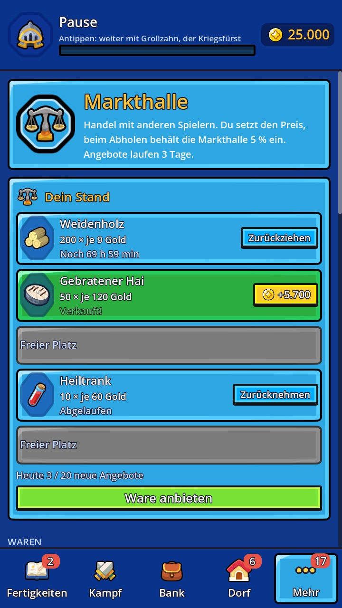
Biete deine Waren anderen Spielern an und bestimm selbst den Preis. Was verkauft ist, wartet als Gold auf dich.
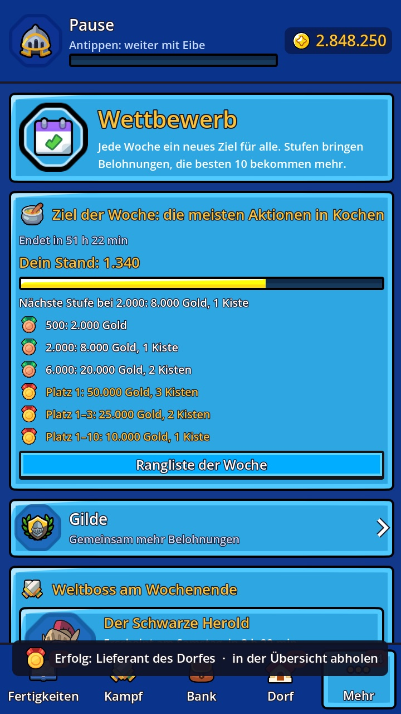
Jede Woche ein neues Ziel für alle, mit Belohnungen und Rangliste. Am Wochenende kämpfen alle zusammen gegen den Weltboss, und Freunde kannst du anfeuern, damit ihr beide mehr Erfahrung bekommt.
Jede Fertigkeit, jedes Gebiet und jeder Boss ist ohne Bezahlen erreichbar.
Videos nur, wenn du sie startest, etwa für einen EP-Schub.
Spiel, so lange du willst – oder mal eine Weile gar nicht.
Sicherung in der Cloud und ein Code, um den Spielstand aufs neue Handy mitzunehmen.
Der Betatest auf dem iPhone läuft – Android folgt bald. Wähl dein Handy – dein Feedback formt das Spiel.
Die kostenlose App von Apple für Betatests.
Öffnet Bannerfall Idle in TestFlight – dort „Installieren“ tippen.
Mit dem Google-Konto des Play Stores anmelden und „Gruppe beitreten“ tippen. Schon in der Bannerfall-Gruppe? Dann passt es schon.
Auf der Seite, die sich öffnet, „Tester werden“ tippen.
Bitte mindestens 14 Tage im Test bleiben.
Ein Spiel, das ohne dich weiterläuft. Du bestimmst, was dein Held tut, und er macht weiter, auch wenn die App zu ist. Kurz reinschauen oder eine Stunde spielen – beides passt.
Der Betatest auf dem iPhone (TestFlight) läuft, Android (Google Play) folgt bald. Die Veröffentlichung folgt, sobald das Feedback eingearbeitet ist.
Es kommt vom selben Entwickler und hat denselben Look, ist aber ein eigenes Spiel mit eigenem Spielstand. Du brauchst Bannerfall nicht, um es zu spielen.
Nein. Bannerfall Idle ist kostenlos. Der freiwillige Einmalkauf „Unterstützer“ verlängert die Offline-Zeit auf 8 Stunden und bringt ein paar Annehmlichkeiten, aber alles ist auch durchs Spielen erreichbar.
Deutsch und Englisch. Das Spiel folgt der Sprache deines Geräts und lässt sich in den Einstellungen umstellen.
Bannerfall Idle ist ein Indie-Spiel von Jakob Ehmann aus Österreich.
Mach beim Betatest mit, auf dem iPhone oder unter Android. Dein Feedback formt das Spiel.
Beim Betatest mitmachenAuch von uns: Bannerfall: Tiny Battle, ein Lane-Battle-Spiel mit 22 Einheiten.